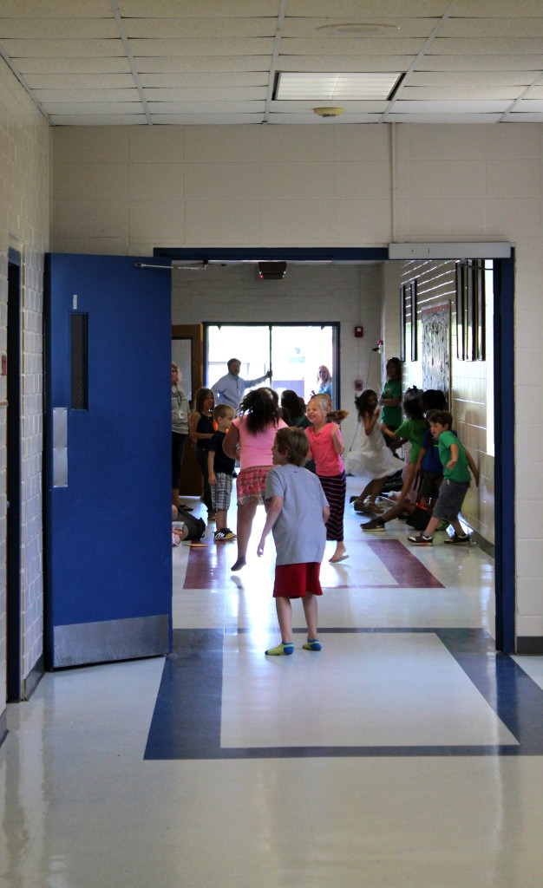

.png)
.PNG)
.PNG)
.PNG)
.PNG)
.PNG)
.JPG)
.JPG)
.PNG)
.PNG)


I walked through the back hall where the last of the “bus children” were waiting and then sat on the steps outside my building..waiting to see that last bus as it pulled away from the school.
And just like that a 33 year teaching career was over.
The day before that, all the teachers in the building surprised me by bringing in snacks to celebrate my retirement…everything from olive dip to 3 different flavors of brownies to fruit to apples and Heath Brickle dip and more…lots more! It was very thoughtful of them (and delicious!) So over the weekend I got an idea to make one last party for them since this would be my last opportunity to do so. I wanted to thank them for being my “second family” for soooo many years.
I shopped on Saturday, made chalkboard things and figured out serving pieces on Sunday afternoon, and spent Monday preparing the food. (Monday was a holiday, and we still had 2 days of post planning at the school this week.)
Here is how it all turned out…
 As you can see, there were chocolate dipped strawberries, jars of cookies, a jar of hugs and kisses, (I couldn’t resist!) cheese straws, cucumber sandwiches, brownies, pimento cheese and crackers, banana bread, cranberry orange pound cake, red velvet cupcakes, nuts, pecan bars, and tomato sandwiches.
As you can see, there were chocolate dipped strawberries, jars of cookies, a jar of hugs and kisses, (I couldn’t resist!) cheese straws, cucumber sandwiches, brownies, pimento cheese and crackers, banana bread, cranberry orange pound cake, red velvet cupcakes, nuts, pecan bars, and tomato sandwiches.
Most of the food came from Fresh Market, but I did make the 2 kinds of sandwiches, the brownies, and the chocolate dipped strawberries. Those basil tomato sandwiches were by far everyone’s favorite. 🙂 The recipe was on the blog 2 years ago here, but I kept getting asked for it so I am putting that recipe on here again.
The little black cards on the table were quote cards I found in the stationery section of Target.
I liked them so much, I decided to copy one of them and use it on a gift for everyone. 🙂 (My friends have showered me with gifts and gift cards to restaurants, Lowe’s, a bakery, Pottery Barn and more these last 2 weeks. All too much!) So I wrapped up a candle in a plastic gift bag and tied on one of the quote cards with a red ribbon. I loaded them all in my wagon (that thing has really come in handy this week!) and delivered them to all the staff early Wednesday morning.
On Wednesday afternoon, we had our end of the year luncheon (with yummy barbecue and all the fixings!) where those of us who were leaving were recognized. Goodness what a bittersweet time this has been! I had written a letter and sent it to all my teacher friends that morning saying goodbye and urging them to speak up when there are problems in education. I have been quite….um…opinionated (that’s the nice word my principal used 🙂 ) in my career, so I wanted to encourage them to be the same. I knew there was no way I was going to be able to talk after they had spoken about me at the luncheon, and boy am I glad I wrote it because I think I might have gotten out 2 sentences. I was just too choked up.
And then there was this gift from the school ….
What a thoughtful and smart present. It even has my name on a plaque on the back of the chair. 🙂 They also gave me a yearbook with comments from all the staff written in it (that really made me tear up!) and a 10 layer chocolate cake that we have been enjoying waaay too much!
You may remember my classroom from a post back in August…
One last look…
(I’m trying to figure out what to do with that loveseat for my daughter’s apartment.)
This is where the handy dandy wagon has been all those years (on top of the closet.)
And this was one last look when I closed the door on Wednesday afternoon.
It felt so much like this scene from You’ve Got Mail.
I made the decision to retire last winter. If someone had told me then how emotionally hard this was going to be, I would have said they were crazy. I thought I would be so happy I would be turning cartwheels across the stage! (Don’t worry…I’ve never been able to do a cartwheel. 🙂 ) It is a major change in life with a roller coaster of emotions. At the end of my long letter to all my teacher friends, I included a link to this musical video with lyrics that perfectly expressed my feelings.
I spent yesterday paying bills and feeling drained, but… enough with the sadness and looking back! It’s a bright sunny summery Friday with a great weekend ahead, and this card is on my desk today. 🙂
Yes, it is time to start this second chapter…the fun one! Thank you for letting me share this “scrapbook page” from real life, and thank you for all your super kind comments about retiring in the previous post. Know that you are such a blessing to me! I’m closing this chapter of my life with one last video… an upbeat one for your Friday! 🙂
Enjoy!
Until next time…


.PNG)
Kelly – Congratulations on your retirement. I am sure there are a lot of emotions going on for you – both happy and sad. I am sure that you were a wonderful teacher and will definitely be missed. Selfishly I am happy though….because I have become such a fan of your blog and you that I am hoping this means more time for “us”. :-> Good luck with everything! Sarah
——————————————————————-
Thank you Sarah. Yes, I hope to get more done with the blog now that school is no longer occupying my time. I’m so glad you are enjoying the blog!
Kelly
So thoughtful of you to prepare such a nice spread for your teacher friends. Teacher friends are the best ever. When you count the hours you spend as much time with them as your family. Bittersweet to watch that last bus pull out.
Your future has endless possibilities.
———————————————————————-
They are like family, and I have probably spent more waking time with them than my family from August through May. (sad huh?) It was definitely bittersweet to watch that last bus. I was sitting alone on the steps and our newly hired teacher (who will start work next year) came up and said, “You doing okay?” (She was really concerned.) I just shook my head because I did not want to cry.
I hope you are right about the endless possibilities…or at least a few new possibilities. 🙂 My retirement check is going to need some help!
Kelly
I’m just now getting to read this post and . . . gasp! It’s a tear- jerker for sure! I never got to finish my teaching career because I quit to have children and moved and . . . and . . . it just never worked out. I’m sad about that, but deeply appreciative and understanding of those who took it all the way to the finish line.
I’m so thrilled to know you were the “outspoken” one. That was always my title, and one I carried over to being a parent in the school system. There are so many things that need to be changed, but people and schools get in ruts because they’ve “always done it that way.” What a shame. I’m sure you will always be remembered by your students and fellow teachers.
And now, on to new adventures!
————————————————————————
I think your career took you into a much more creative area Leslie Anne – not that teaching is not rewarding, but if you are creative it can sometimes be frustrating to be in a more restrictive environment.
Yes, I was the outspoken one…both verbally and in writing. At my retirement luncheon I could only get out 2 sentences because I was too choked up. Our assistant principal piped up with, “That’s the least she has ever said!” 🙂 I am glad you were vocal as a parent. You are right about things needing to be changed, and they certainly don’t get changed unless someone speaks up about them. Good for you girl!
Kelly
Have a long, healthy and wonderful retirement!
——————————————————————-
Thank you so much Cindy!
Kelly
Kelly,
I just stumbled upon your blog and I had to write. That “R-Word” really hits home as I just retired from my classroom days ago. I spent 30 happy years educating first graders and it was a blessing! It’s an emotional time, isn’t it? Our precious memories will always be with us. Enjoy your new chapter in life!
———————————————————————
Congratulations on your retirement! Yes, it certainly is an emotional time. And kudos to you for teaching first grade! I have always said that is the most challenging grade to teach because they are still babies, not independent, and you don’t have a parapro to help you in the classroom as they did in kindergarten. I hope your second chapter is filled with fun and new experiences!
Kelly
“The Best is Yet to be”…
——————————————————————–
I sure hope you are right Colleen! 🙂
Kelly
What a wonderful post! And, what memories it brought back! I read it three times and cried every time. I remember those last days of school, packing everything up and saying goodbye. Your empty classroom…that was tough…but so was the classroom all beautifully decorated because it looked like such a happy, safe, fun place for children. You had to have touched so many lives in such a positive way. The scene in “You’ve Got Mail” was so appropriate…and that song! Oh, my! How thoughtful of you to have a party for your co-workers! I know they are going to miss you…as will the parents and children. Everything looked perfect! Somethings you are going to enjoy (that only teachers will understand)…. going to the bathroom when you need to, eating when you want to, chewing slowly, going out to lunch, staying in your pjs as long as you want, watching a schoolbus go by and knowing that you don’t ever have to have bus duty again. I will warn you that in retirement, time speeds up. You are going to be so busy and I can’t wait to see what all you do. Congratulations, Kelly! Have fun!
——————————————————————-
Thank you Kathy! (But I am sorry it made you cry. 🙁 ) Yes, I did have the opportunity to touch a lot of lives, but on the flip side, I have been touched by so many lives as well. 🙂 You are so right about all the things I am going to be able to do now that I am not in the school setting…the freedom to go to the restroom and the luxury of a long lunch time will be at the top of my list!! How in the world does time speed up?? I was so hoping it would sloooow down.
Let the fun begin!
Kelly
Kelly….I am sure you were counting down the days to retirement…however, it must have been so bittersweet for you….what a grand send off from those who truly appreciated you and those that will miss you….Happy Retirement Kelly!…I can remember the greatest part of being retired is sitting in front of the TV watching my favorite morning show and drinking coffee still in my PJ’s….
———————————————————————-
Thank you so much Shirley. It was much more bittersweet than I had thought it would be. I have had something to do every day since I have been off so the morning tv watching has not happened, but I am sure I will enjoy it when things slow down some here.
Enjoy your Friday!
Kelly
You will love retirement!! You have lots of interests that will keep you busy. I retired after 33 years of teaching also!
——————————————————————-
I think I will too Debbie…especially when I don’t have to go back to work in July and I can actually have a full summer! (And maybe even go to beach in August..wow!) Congrats on your 33 years of teaching too!
Kelly
Congratulations on your retirement Kelly! I’m curious, where did you source those giant pencils? They’re wonderful!
————————————————————
Thank you Brooks! I made the giant pencils from the rolls inside of wrapping paper, covered them with yellow bulletin board paper, made the point out of a semi-circle of manilla tagboard, rolled a red strip of construction paper into the “eraser” part, capped that with a circle from the construction paper, and then put a thin strip of aluminum foil at the base of the “eraser” to look like the metal on a real pencil.
Glad you liked them! There were also a couple of very large ones in my classroom made from the rolls inside upholstery fabric.
Kelly
Kelly, congratulations on 33 years of teaching!! Wishing you lots of enjoyment in this new chapter of your life!!
——————————————————————–
Thank you Lisa! I believe there is much to enjoy in this chapter as well! 🙂
Kelly
Kelly! I am also retiring this next week from 38 years of teaching music in an elementary school near Minneapolis! It will be exciting and fun and wonderful! Let’s not over-think it and just go for the gusto!! Good idea? Good idea! Best wishes from one hard-worker to another!
———————————————————————
Congratulations on your retirement Heidi! 38 years….wow!! I know you will be missed. Best wishes to you too!
Kelly
Congratulations on your retirement! I too find change hard. Wishing you all the best in this new adventure. (((HUGS)))
——————————————————————–
Thank you for the congrats AND the hugs too Lynn! It is a new adventure for sure.
Have a happy Friday and a great weekend!
Kelly
Congratulations! When I retired 5 years ago they threw me a party and I said, I didn’t think it would be so hard. But you know what I got over it real quick. I have loved retirement and never looked back. Now it would help if you had some grandbabies. Heehee.
PS only you would throw a party for your coworkers when you retired!!! Beautiful, I might add.
Cindy
———————————————————————-
No grandbabies any time soon here. (None of mine are married or even engaged!) I am glad to know you get over the sadness quickly. I’ve been so busy the last week, I haven’t even had time to think about it! 🙂
Kelly
p.s. Glad you liked the party Cindy. 🙂
I know this was a bittersweet time for you. You have wonderful friends and have left a wonderful impression on these children that will last their lifetime! Congratulations and I look forward to reading all about your new adventures! Have a great day!
——————————————————————
It was definitely bittersweet Benita. I will miss the teachers and the children but not all the darn paperwork! There has got to be a way to stop all of it.
Hope you have a happy Friday and a wonderful weekend!
Kelly
Okay–tears! I haven’t been in the classroom for many years myself now, but this post made me very emotional. I loved the ‘party’ you created for your second family, and I’m sure they loved and appreciated it too. 🙂 I know you made a huge difference to so many children over the years since teaching is a calling and a gift you used it to help shape and mold those young lives. I also realize your new ‘normal’ will be very different now. After 33 years, how can it not be? However, I can’t wait to read about and see the things you will be doing at TOTH now that you will not be teaching full-time. Since you’re a Disney fan, I think you’ll appreciate this quote:
“We keep moving forward, opening new doors, and doing new things, because we’re curious and curiosity keeps leading us down new paths.”
~Walt Disney
Enjoy your new paths! And we’ll all enjoy hearing about the journey!
Blessings,
Amy
———————————————————————
Thank you for all your sweet words here Amy, and thank you for Walt Disney’s words that are so fitting. Many of the students kept asking me why I was retiring. That was a hard one to answer to children. I do think I am ready for this change, and you are so right. It will be a very different normal from now on (although this week has been super busy!)
Happy Friday to you! 🙂
Kelly
Great post. I am an educator too and I will be retiring next year. Thanks for sharing your last day of school with us. You mentioned the “R” word…..I think that now stands for RECESS….you get recess everyday ….all day long now! Enjoy! Thanks for being an inspiration in all that you do.
————————————————————————
Love it! You are sooo right…recess all day long! What a great way to think of it. 🙂
Kelly
Happy Retirement! And THANK YOU for devoting so many years to the education of our children!! I’m with the other posters — that empty classroom photo got to me. It just shows how much you as a teacher added to the student’s experience. As an educator (middle school librarian), I know how different this career is from others — you get so emotionally involved. Let this summer be your transition time 🙂
On a lighter note, look at you, giving a party when you are the retiree! Such a sweetie. The set up was adorable. I’m excited to see all of your creativity in your retirement!
———————————————————————–
Thank you for your sweet words here Kim. Yes, you do get emotionally involved with your students…making goodbye extra hard. I am glad you liked all the party things. It certainly was yummy. 🙂
Enjoy the weekend!
Kelly
Awww…Kelly. 🙁 Bitter Sweet, and understood! Your post even really hit my heart this morning, by the time I reached your picture of the empty classroom with all the “Cute Kelly” touches taken away. 🙁 Love the movie, You’ve Got Mail. Good comparison Kelly. Oh, and look at you, upon your parting, still throwing a little “Kelly party” to those you are leaving. Love the chair they got you. How sweet. Happy retirement Kelly!
———————————————————————–
Wasn’t that chair just perfect for retirement?! I thought they were so smart with that gift. That scene from You’ve Got Mail just popped in my head when I was standing at the door for the last time. Thank you for your happy retirement wishes, Debra.
Enjoy the rest of your weekend.
Kelly
Congratulations on your retirement! I used my post planning days to make all the bulletin board patterns you sent me in the fall. I couldn’t agree with you more about speaking up about the state of our schools. After finishing my first year being back in the classroom after fourteen years, I am astounded and dismayed at the changes in curriculum and common core! I felt guilty most of the school year for what I was asked to teach my second graders (many of whom were special Ed. And ELL). So crazy what is expected of them and the crazy math that to me is developmentally not appropriate.
Enjoy your new phase! I look forward to seeing all the exciting things you will be doing. I’m sure your school and students will miss you. It is evident from your classroom pictures you cared deeply about teaching and were a passionate educator. Best wishes!
———————————————————————
Yay! I am so glad you could use the patterns for next year. Gosh, I wish I could have sent you all I took off the walls in my room in the last couple of days. You certainly understand the problems in today’s education…especially the math. In our county practically everything is word problems from kindergarten on. I think we are doing them all an injustice not letting them master basic facts first. When I rule the world I will get that changed. LOL
Enjoy the rest of your weekend Amanda.
Kelly
Congratulations!What a opportunity you have had for 33 years,to be able to impact your creativity on those lucky little children. Now as you enter the second chapter, how lucky us readers become, hopefully you will share all that creativity with us readers. Please keep inspiring us!
———————————————————————-
The blog is definitely going to be my second job now that I am finished with my first one. Thank you for reading and leaving your kind words here Linda.
Kelly
Happy Retirement! I am rather jealous of all the freedom of choice you will have now – as Cindy says above you have a lot of interests so it is rather unlikely you will get bored! Possibly more of a problem to decide what to do first?! You are obviously very loved at your job – what a lovely send-off/start to the next phase 🙂
———————————————————————–
Thanks Frances! Yes, you can be jealous of all of my free time. I am sooo looking forward to sleeping late for a change!!
Kelly
I was doing okay til I saw the empty classroom! I’m sure this was very bittersweet. Congratulations on your retirement. Being a teacher is one of the most giving professions. Just knowing you through your blog I am sure you poured your heart out to so many students. Congrats!
———————————————————————
It wasn’t real easy in person either Patty…definitely bittersweet. Thank you for your congratulations. It was a job that took over my life…which may be why teachers in a school are like family.
Hope you are having a great weekend.
Kelly
Congratulations on your retirement! It looks like your fellow teachers gave you a wonderful sendoff. The luncheon you prepared was well thought out and looked delicious! I, too, retired after 30 years of teaching in 2003 and it was bittersweet. Now I teach part time as an adjunct professor at the community college so I still have one foot in the door.
You have a lot of interests so I’m certain you will love retirement. Now is your time to kick back, take it easy, and spend more time on you! Happy Retirement!
——————————————————————————————-
My teachers and our administrators gave us a wonderful catered lunch, and there were certainly plenty of sweets in what I took to school.
Yes, I do have many interests…just hope there is plenty of time for all of them! LOL
Kelly
Super EXCITED for you!! Those kiddos were blessed to have such an inspiring and creative teacher. Well done, thy Good and Faithful Servant!!
Hugs to you, and Happy Retirement!!
—————————————————————–
Thank you so much Jennifer. I appreciate your sweet comments here. 🙂
Kelly
What a lovely “au revoir” to your many years of teaching. Your teacher spread looked amazing, food and tablescape! I remember that “last day of school lunch” only too well, and how the retiring teachers including myself were recognized. Where had the years gone that I was one of them??? Like so many here, I understand very well all that you must be going through. Yet, I think we are all eagerly awaiting going along with you as future endeavors/adventures present themselves. Wishing you all the best, enjoy!
———————————————————————
Yes, where have all the years gone? They did just fly by. Maybe they will slow down some in retirement. 🙂 Thank you for understanding the mixed emotions. I am sure with a little time it will all be pure joy!
Kelly
Congrats on your retirement Kelly!, and I will add my thanks for you years of devotion to your students! I can only imagine the life you will create in your retirement – I am sure it will be an amazing time for you. All my best!
——————————————————————–
Thank you so much Carol. You don’t have to thank me for being devoted to students…It was my pleasure and such a rewarding experience!
Kelly
I know you have been a wonderful educator! I retired this time last year after 35 years as a university professor in education. It IS an adjustment. I do miss my students and being in the schools. But the days pass quickly by, and I have enjoyed this knew life. Good luck and best wishes! Becky in Soggy Oklahoma
——————————————————————
Becky I can’t believe how much rain there has been in your area. The flooding is just awful. I hope it has not affected you. Thank you for your honest words about how retirement has been for you. I don’t think I will really feel like I am actually retired until July when school starts back here. I will keep your comment in mind then as I adjust to this new part of my life.
Kelly
First of all you are waaaaayyy too young to retire! I can only imagine how many requests there have been over the years to have you for a teacher. Seeing all that you do for your students has made me wish I could go back to school. I can only imagine how many young lives you have impacted. Congrats on your retirement. I have a feeling more big things are to come…
———————————————————————–
It does seem like being in your 50’s is too young to retire, but 33 years in one job is quite long. I am ready to change my focus and move on to something else….so I guess I am not totally retired, right? Education is a very rewarding field when you look at how many people you impact. I know I will miss the children.
Kelly
I so remember that I felt like a fish out of water when I retired. I got up every morning as usual, got dressed, had coffee and then found that since I had no where to go I had better clean house. I almost scrubbed holes in the walls. Life does level out and you will find tons of things to keep you busy and pretty soon you will be like me and wonder how you found time to work.
Congratulations on your retirement. 33 years is a super milestone and just look at all the lives you’ve helped shape. Wow, that is amazing.
———————————————————————-
I can see myself doing exactly what you did…scrubbing holes in the walls. (Although right now the house could use some scrubbing! LOL) I feel certain that blogging alone will keep my quite busy, and I am hoping to do some yard work…and the exterior of the house needs painting….yes, I will be busy! Thank you for the congratulations…33 years was long enough I think.
Kelly
What a sweet post! Now it is time to turn the page. You are going to be great, whatever it is you do.
———————————————————————
Gosh, thanks Ellen! It is definitely time to move on to chapter two. Thank you for your vote of confidence. 🙂
Kelly
Love how you gave yourself time to transition. Enjoy this new part of your life.God Bless
———————————————————————-
Thank you Linda. I plan to enjoy it!
Kelly
Let me offer a big congratulations on your retirement….I can’t wait to see all the things you’ll do now that you aren’t working….well, at least not working a paying job!
When I was forced into retirement 3 years ago I was pretty much a fish out of water that first year….it was all so sudden and quite unexpected (not sure if you remember but I got back from vacation and my married bosses girlfriend had taken over my desk….of course that lasted all of 3 months and he came back begging me to come back to work….that would be a NO!)…anywhoo….my husband said not to worry, I was planning on retiring in another 18 months any way so just enjoy my early retirement. Now, I don’t know how I’d ever have time to work…which is what everyone says.
That was some send off your co-workers did for you and I know the parents hated to see you go too.
I pinned that tomato sandwich recipe to try this summer….it sounds delish!
——————————————————————–
I do remember all the stress of your early retirement. So not good! I have had quite a few months to think on retirement. Thanks for pinning the recipe. It is such an easy and good one! Thank you for the congratulations too, Judy. I am looking forward to having time to read blogs again soon. 🙂
Kelly
Having you as a teacher must’ve been like having some mash-up of Mary Poppins and Glinda the Good as a teacher! Your alternative career might’ve been in art direction for films or the theatre, or some field related to visual display. Given your sense of fun, and the joy you take in celebrations and magical places, however, I believe that, in teaching, you found the ideal vehicle for sharing and passing on your gifts in the world. They will be multiplied probably a thousand-fold via the students you have inspired over the years. That was a chunk of life well spent! Here’s hoping the next chunk of your life is thoroughly enjoyable and rewarding! We, your grown-up students, embrace it eagerly! 🙂 Congrats and best wishes!!!
———————————————————————
Ha Ha!…more like Mr. Ratburn from Arthur! I would love a job in visual display, but I am slooooooow. Teaching was a good fit for me when it allowed more creativity, but it has changed so much that it sadly did not hold that same sense of fun that it once did. I hope the “cycle comes around again” soon. Thank you for your well wishes Ruth. I appreciate them so much!
Kelly
Kelly,
I was literally brought to tears by your description of the last week of school before “R”. After 33 years, it’s no wonder that you might be emotional. It sounds like you were loved and the celebrations were not only fun sounding, but delicious looking.
I know you’ll find a new adventure after a nice, well-deserved, rest and relaxation period. I’ll be excited to hear your ideas when you’re ready to share.
xo,
Karen
———————————————————————-
I didn’t mean to make you cry Karen! So sorry. I was hoping Taylor would lighten the mood at the end. 🙂 We certainly know how to celebrate and EAT around here. I am hoping for adventures in blogging and time to actually read some blogs…I so miss that. I hope things are going well for you and your husband.
You are in my thoughts.
Kelly
Oh, Kelly, I am so happy for you. What a wonderful way to retire! You have touched so many students and teachers. I am one of the lucky ones who had the opportunity to work and learn from your creative abilities and vast knowledge of the classroom. I look forward to your weekly blogs. God has truly gifted you in away that touches others. Thanks for sharing your creative ideas with all of us!I can not wait to see what the next 33 years have in store for you and Walter. Blessings, my sweet friend.
Cynthia
———————————————————————
Aw…you are too sweet Cynthia. I learned from you girl! After 33 years, it was time. I see you are blessed to spend your free time with twin babies. How absolutely wonderful that must be!!! Enjoy those babies. 🙂
Kelly
What a beautiful last day of school you had! Donnie (comment above me) and I are in the same boat as far as retirement goes. I’m not in teaching, but I’m thinking of retiring after 45 years of work. But I’m in the “fearful stage” too. What if I retire and hate it? I won’t be able to come back to my cushy job, that’s for sure. They’re not going to hold it for me….lol. This is something we’ve never done before and we just don’t know what to expect. I’ll be watching your blog anxiously to see how you’re handling it. Enjoy yourself!!
———————————————————————-
Ruby, 45 years??? Wow that is amazing in any profession! But you deserve a vacation after that long! It is the fear of the unknown that scares us. Perhaps if we just think of retirement as a super long weekend, we will be alright. 🙂
Kelly
Congratulations, Kelly, on your retirement and on completing a 33 year career in education! I have no doubt you will be greatly missed. It’s obvious from the time and effort you put into your classroom, that you are a teacher who cares.
Thank you for sharing and inspiring me through your beautiful blog. I’m always wowed by the way you celebrate everything in such a lovely way, and today’s post is another perfect example. May the Lord richly bless you as you begin this wonderful new chapter in life and may the BEST be yet to come!
———————————————————————–
What a beautifully kind comment, Renee. Thank you so much! I do hope the best is yet to come (because everything has been pretty good so far!)
Kelly
Oh Kelly, how exciting. I’m not far behind you – not a teacher, but still a rewarding career. You are giving me courage, I’m in the fearful stage right now, but the comment about a summery Friday really caught my attention. Blessing to you, enjoy. Can’t wait to read the post retirement blogs, and what fun things you have planned to share with us!
——————————————————————–
Donnie, yes it is exciting (if I will focus on that!) The fear of the unknown is what seems to make us scared the most. We both just need to think of it as endless summer vacation. 🙂
Kelly
Congratulations on your retirement!
———————————————————————
Thank you Laurel. I have waited a long time for it!
Kelly
Congratulations! I have been a school teacher and a homeschool teacher so I have a heart for education. I love your classroom and the fact that you make math look inviting even to me:)You’re Got Mail is one of my favorite movies too… touching scene from the movie and a touching post from you for sure. May God bless your retirement.
Dana
———————————————————————
I love that movie too – everything about it. Thank you for your sweet comments about my classroom and my retirement Dana. Good luck with your work in education.
Kelly
Aw, Kelly! Only YOU would be thoughtful enough to give your fellow teachers a party upon YOUR retirement! You are a gem! I know the students and parents will miss you. I always so appreciated the “good” teachers my older children had. I’m sure there has to be some adjustment period for you but oh, what wonderful things await you:) Have you ever considered Instagram? I’d love to follow you on there.
———————————————————————
The teachers I worked with deserved more than a party. They are such hard workers! I would love to do Instagram, but you can’t do it without a smartphone. All I have right now is an old slider kind of cell phone. My plan is to get one this summer…if the upgrade fits in a retired teacher’s budget! 🙂 If I do get one, I will do Instagram, and I will let everyone know here on the blog. Thank you for all your kind words here Kelly.
Kelly
Congratulations Kelly!! Wow, such an emotional week you had. What thoughtful coworkers you have and what a nice way to show your appreciation as well before you left. It speaks so much of what kind of relationship you all have and the great environment for learning you all created. Whichever teacher is given that classroom next year will have huge shoes to fill though, that’s for sure! Have a wonderful Summer. I can’t wait to see what God has in store for you next!
——————————————————————
Thank you so much for the congratulations Jill. I think the job was left to someone who is very capable of doing it. 🙂 (There were a number of people who really wanted my job.) Our school has some very talented and dedicated teachers who work there. I will certainly miss those folks a lot!
Kelly
Oh my, I’m sure it was very emotional. I love how you documented it. I’m sure teaching today isn’t what it was when you started. I’ve heard from friends that the decline of the family (morals, etc.), standardized testing and new laws make it a much harder and sadly less rewarding to go into these days. 🙁 It was so nice of you to do something for your coworkers also. I love how you encouraged them to speak out. I am like you…a bit opinionated too. 😉 I like to say I am a”tell it like it is gal.” 😀 Thank goodness as I have spiritually matured through the years I have better discernment of when to speak up and when to let things go!! 😛 Thanks for including the tomato sandwich recipe. They sound delish!! Now, go enjoy your summer and hey, the rest of your life!! 😀
——————————————————————-
Thank you Gina. You are so right about teaching today not being like it was when I started. Long ago, you could actually do creative things with the students. There is no time for that now, and the administration at the local board of ed is so top heavy, teachers’ thoughts are just not heard. It is a sad situation. I think I have also matured in the speaking out field, but there have also been times when I wish that I had NOT held my tongue.
On a happier note, the tomato sandwiches ARE delicious! I hope you make them soon. 🙂
Kelly
Lovely!! Just lovely! So enjoyable getting to see your last days of teaching!! Your school is really going to miss you especially the students. And you will miss them, too! It has been 4 years and the kids are what I still miss the most. The first video made me “boohoo” ( have never heard that song before) and then for some reason couldn’t get Taylor’s to down load.:( Love the quote ” get started!” So I’m off to decorate with my patriotic theme for the summer!! Watching to see your next post— relax this weekend! Sounds like you are retiring and becoming a real empty nester at the same time!! Mercy— all kinds of changes! Thanks for sharing all this with us!:)
———————————————————————
I’m so glad you enjoyed it Louvina. I actually thought very few people would read all of this post since it wasn’t really house related. Boy was I wrong! I think this has been one of my most read posts this year so far! I am sorry the upbeat Taylor Swift video didn’t load for you. Try clicking here to see if it will take you to the webpage: https://www.youtube.com/watch?v=TEpTNFHHjNg I hope you had fun doing all your patriotic decorating. I have a little done but will get on it big time next week (after I spend my Pottery Barn gift card. 🙂 ) This weekend has been BUSY. We have looked at apartments most of the day but finally signed the lease just a little while ago…glad to have that done!
Take care.
Kelly
Kelly,
Thank you for sharing your scrapbook page of life with us. Congratulations on your 33 years of teaching! I know that it is difficult to turn the page sometimes but I know that whatever is next in your life will be great! You inspire all of us your “e-friends” immensely. Keep us posted. Best wishes! Take care!
———————————————————————
Thank you so much Dawn. 🙂 I think the turning the page is hard because of the fear of the unknown…just have to step out on faith, right?
Kelly
Love the Meryl Streep quote as it applies to this new chapter for you! You have given, given, given it appears to those of us who “know” you through your wonderful blog. Now it is time for YOU! I retired from my teaching life a couple of years ago, and I teared up reading about your last day…my dear team of teachers knew I wanted to quietly leave at the end of that last day, but just when I thought I could get out without breaking down, they came into my room, said all sorts of dear things, and had presents…foiled!! Enjoy all the options ahead of you!
———————————————————————–
I bet you couldn’t talk either when your friends showed up, right? I know that feeling of wanting to leave quietly. In fact I had told several people I wanted to just fade into the sunset. Thank you for your sweet words here Liz. How very kind of you.
Kelly
Congratulations Kelly! 33 years is an incredible achievement. Loved the entire post, but I especially loved the picture of the bus kids dancing. I think everyone can remember that feeling. My daughter’s principal played the Hallelujah Chorus as the kids ran out of school for the summer. Enjoy your retirement, I’m sure you’ll stay busy.
———————————————————————
The Hallelujah Chorus…how funny!! (I know THAT feeling. 🙂 ) It was funny watching the kids (and some of the teachers) dancing on the last day. Yes, I will stay busy. This weekend has already been quite full!
Thank you for the congratulations Barb.
Kelly
Oh, congratulations! I’m so happy for you. I have an acquaintance who just retired from her long teaching career, and she didn’t leave in the same way you did. She left after she had long since gotten to the point where she despised the kids and her coworkers and her entire attitude was “good riddance!” to the whole enterprise of teaching. I thought that was so very sad, not only for her but for the kids she’s taught for the past years. You left in a lovely way, with class and joy and beauty. I wish you all the best. 🙂 Also, I’m helping my youngest daughter furnish her first apartment and am looking forward to seeing what you do with your little loveseat!
——————————————————————-
That IS very sad for your friend, Nancy. Goodness. I hope she finds happiness in her retirement though. Thank you so much for your well wishes, and good luck decorating your daughter’s apartment. We signed the lease on our daughter’s just a couple of hours ago! I took photos but not sure what we are going to do.
Kelly
Congrats on your retirement! It is bitter sweet for sure but you left on a high note with some pretty awesome co-workers. Now on to your next adventure.
———————————————————————-
It is an adventure; isn’t it Cheri? 🙂 I did leave on a pretty high note, and yes my co-workers are awesome (and some of the hardest working ladies you will ever meet!) Thank you for your congratulations here.
Kelly
Congratulations! You have been such an amazing teacher and a huge asset to the school. I will always appreciate how much you nurtured Lauren when we first moved here. It was a tough year for all of us and under your tutelage you made her into the hardworking, thoughtful high school student she today. I know the Chapel will miss you dearly but you will flourish in your second chapter! Can’t wait to see what develops for you!
——————————————————————–
I highly treasure your compliments here Andi. It was a wonderful pleasure to teach your beautiful (and smart!) daughter. I know she will do great things!
If my second chapter is even half as rewarding as my first was, I will be a lucky girl. 🙂
Kelly
Congratulations Kelly! I wish you all the best. You are such an inspiration to people both young and a little older. 🙂
———————————————————————–
Goodness! Thank you for such a sweet compliment Susan. I appreciate it!
Kelly
Aw, bless your heart! I understand. I didn’t teach 33 years but when my time was over because of our move, I was so sad. I loved teaching. I will tell you that you’ll miss it awhile. Then you’ll look back and wonder how you ever did it all. You’ll sleep better at night too. There’s so much to life and you’ll enjoy it!
———————————————————————-
Thank you so much for the encouraging words Stacey. I do need to hear them! 🙂
Kelly
Kelly, again congratulations on your retirement. I cried throughout your post this morning but with a big smile knowing in three hours my husband and I will be reunited with our middle school’s retired teachers of the past three years and those still who are ending their school year next week. Bittersweet moments caught me off guard the summer following our retirement.
I will definitely give those tomato sandwiches a try for several parties in the making. I have a beautiful tray by Don Drumm a local artist, given to us at retirement that will display your sandwiches proudly. Many, many best wishes to you and your family.
———————————————————————–
Thank you Sandy. I am so sorry it made you cry. I hope you had a fun party with all your teacher friends. You will LOVE those sandwiches. Make them soon! 🙂
Kelly
Kelly, I cannot wait to see what you will do in retirement because you did SO MUCH while working!! I was talking with a friend who also reads your blog (we were naming our favorite blogs) and we both agreed we wanted to move to your house. It is our favorite in blogland. Sarah’s house at Thrifty Decor Chick would be my second choice. 🙂
Thanks for sharing that yummy recipe. I must have missed it the first time!! Enjoy your summer, you deserve all the gifts and accolades. Your passion for education came through in your blog. Thank the Good Lord for those teachers who speak up for the children!!
——————————————————————-
Gosh thank you for such a wonderful compliment Arlene! And I am glad you like the recipe. I hope you have a chance to make it this summer by cutting up those divine summer tomatoes….yum. I had no problem speaking up for the children and for the teachers. 🙂
Have a great weekend!
Kelly
Congrats! It might not hit you at first…that you are retired. It might not hit you until that day, this summer, when you would have been going into your classroom to start getting it all fixed up. You might even tear up. But, as you said, this is the beginning of just another chapter of your life…the fun one! 😉
———————————————————————–
I think you are right Donnamae. I don’t think I will really feel retired until everyone starts back to school. Right now it is just “summer vacation.” Thank you for your congratulations!
Hope you are having a delightful weekend!
Kelly
Hi Kelly–I got tears in my eyes just reading about your last days as a teacher. What a wonderful goodbye to your career. I know that you have enriched so many young minds in your 33 years. Congratulations. Take time to adjust. The best is yet to come!
———————————————————————–
It WAS a very nice goodbye Anne. I hope I have made a difference in some of my students. It was certainly not an “immediate results” career! I believe you are right about the best is yet to come. 🙂
Enjoy your weekend!
Kelly
Oh this post brought tears to my eyes! I would like to thank you for your dedicated service to children and enjoy a wonderfully fruitful retirementidn.
——————————————————————–
I didn’t mean to make you cry Laura! Taylor Swift was supposed to keep this lighthearted for me. 🙂 Thank you for your kind comment. I am looking forward to having some free time.
Kelly
Kelly I retired two years ago (not from teaching). I am having so much fun I can’t believe how good I feel. I ran into some people I used to work with and they told me if they didn’t know better they would swear I was pregnant because I just glowed (almost 65 so I know that isn’t happening). Enjoy your retirement, you earned it!
———————————————————————-
Oh your comment made me laugh out loud Patty! Thanks for the giggle! I am so glad you are having such a good time in your retirement. I hope I can be just like you!
Kelly
Wow, Kelly! I’m sure it’s been a bittersweet semester, culminating this week. Your party for your colleagues looks wonderful, and I’m sure it was much appreciated. I know that all the students you had over the years were just absolutely blessed to have you for a teacher, and I’m sure their families were blessed as a result. Congratulations on a wonderful accomplishment, a legacy, and being a great role model for new and beginning teachers. I love the Meryl Streep quote. I need to get myself to Target and pick those cards up! I can’t wait to see what your Chapter 2 looks like! Enjoy the weekend–and retirement! xo Paula
——————————————————————–
I know all the teachers appreciated the tomato sandwiches if nothing else! (They kept coming back for them. LOL) I had several previous students who are now older come by to say goodbye, so that was certainly rewarding and bittersweet. Thank you for your lovely words here Paula. I appreciate them so much. I plan on enjoying the weekend (after we sign a lease for our daughter’s new apartment.) I hope you have a fun weekend too!
Kelly
I am new to your blog, but I just wanted to congratulate you on 30+ years of teaching and leading generations of our nation’s leaders. My background is in education, and my mother was a teacher, so it is a privilege to see a wonderful teaching career close and another chapter in life open for you. You are truly an inspiring lady, and I wish you much happiness in your retirement.
————————————————————————
Thank you for leaving your sweet comment Lori. If you come from a background in education, then you know how many “outside the classroom” hours are put into teaching. Someone said with retirement you get your life back. That is how I am feeling now. Thank you so much for your well wishes!
Have a wonderful weekend!
Kelly
Congratulations and best wishes on your retirement, Kelly! Enjoy every moment of it!
——————————————————————–
Thank you Doris! I plan on doing just that!
Kelly